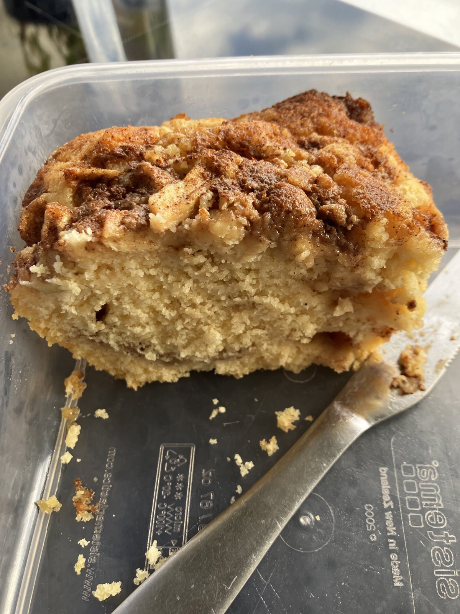

Apple Cinnamon Loaf

Preheat oven to 175 degrees.
1tspground cinnamon1/3 cupbrown sugar
Mix ground cinnamon and brown sugar together and set aside
1/2 cupmargarine3/4 cupwhite sugar
Beat margarine and white sugar until fluffy.
2eggs
Beat eggs, one a time into mixture
1 1/2 tspvanilla essence
Add vanilla essence
1 1/2 cupsplain flour1 3/4 tspbaking powder1/2 cupmilk
Combine plain flour and baking powder and beat and slowly add milk
Pour half of mixture into loaf tin
2green apples
Add half diced green apples and cinnamon sugar, pat into mixture
Pour remaining mixture in and top with remaining apple and cinnamon sugar
Bake for 35-45 mins